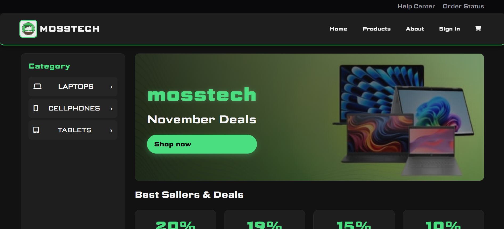
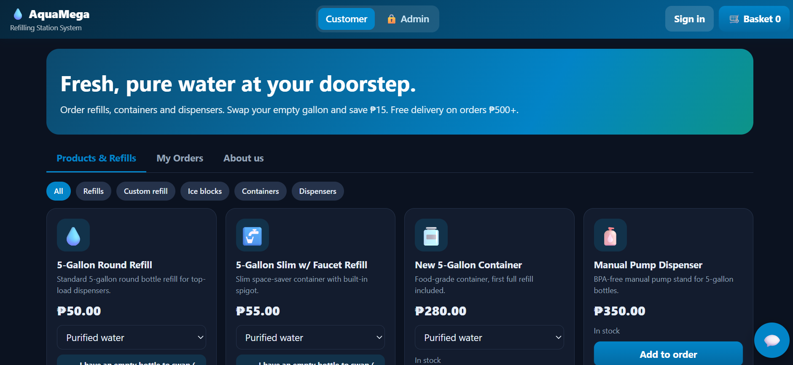

MOSSTECH

MOSSTECH
A tech-gadget store. Customers sign up, browse products, fill a cart and check out. The admin dashboard lets the owner manage orders.
Open mosstech.onrender.comNode.js, Express, SQLite, HTML/CSS/JS
I’ve built and deployed two full-stack systems as school projects: an online gadget store and an ordering system for a water refilling station. I want to spend my OJT working on real features with a team that gives honest feedback.
Both began as school requirements and now run online. Open them and try the ordering flow. They run on a free host, so the first load can take about a minute.

A tech-gadget store. Customers sign up, browse products, fill a cart and check out. The admin dashboard lets the owner manage orders.
Open mosstech.onrender.comNode.js, Express, SQLite, HTML/CSS/JS

An ordering system for a water refilling station. Customers place orders, the owner dispatches riders on a map, and staff track container loans and billing.
Open aquamega-lv9g.onrender.comNode.js, SQLite, OpenStreetMap, admin dashboard
Skills I have already used in my projects.
I learn quickly, write clear documentation and ask questions early.
I’m a 3rd-year BSIT student and I have been programming since Grade 11. I learn by shipping: both projects above started as school work and are now deployed.
I want an OJT where I can work on real systems, take feedback and grow as a developer.
Follow my work or send me a message on any of these. For OJT inquiries, email works best.
Email: Bernardbriola0826@gmail.com